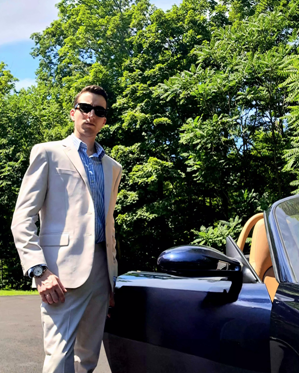

Hello, I'm a Senior at Manhattan University pursuing a B.S. in Mechanical Engineering with a Concentration in Applied Mathematics.
Jeffrey Laederach is a Swiss-American angel investor, entrepreneur, and engineer.
He is the founder of Lux Americana, a political advocacy organization based in Sheridan, Wyoming that promotes American exceptionalism and preserving the West. Through its private investment arm, Forwards Fund , the company connects its network of angel investors with early-stage technology startups seeking to reindustrialize America through innovation across critical infrastructure sectors including mining, agriculture, energy, compute, defense, manufacturing, and transportation. Forwards Fund angels have invested alongside venture capital firms including Y Combinator and the syndicate has partnered with OpenVC and Deel to expand reach and streamline operations. Jeffrey also coordinated an early angel investment into Edgerun Industries (YC S26) , a Palo Alto, California-based defense technology startup building hip-mounted military exoskeletons for enhancing soldiers' capabilities on the battlefield (led by former co-founder of Durin and early employee at Stoke Space and Hadrian).
As a strong supporter of the emerging deep-sea mining industry, he is also an early angel investor in MOBY Robotics , a Miami, Florida-based robotics company developing autonomous, AI-powered ocean technologies for maritime defense and national security, marine surveying, and sustainable critical mineral collection (participated in their friends and family round). Jeffrey has advocated for cooperation between incumbant and nascent companies in the ecosystem to accelerate commercialization of harvesting polymetallic nodules from the seafloor and effectively tackling environmental and regulatory hurdles. He has collaborated with executives from The Metals Company (TMC), Mithril Minerals, Impossible Metals, and others to help foster the growing what he calls the "deep-sea mining industrial base." Ultimately, he believes that deep-sea mining is imperative to national security, energy independence, and critical mineral supply chains and that it will play a key role in the United States' long-term economic growth in the coming decades; creating thousands of jobs and driving technological innovation.
In addition to this, Jeffrey has experience across the energy sector, most recently working as an instrumentation and controls (I&C) engineer working on nuclear power plant life extension projects out of Chattanooga, Tennessee. Prior to that, he worked in the Empire State Building and co-managed a portfolio of $100M+ energy performance upgrade projects across the Five Boroughs of New York City. His first engineering role was developing data analysis software for calculating energy and cost savings as a result of real-time energy management system installations in skyscrapers and large buildings across NYC.
Jeffrey is a member of the Metropolitan New York chapter of the Porsche Club of America (PCA) as well as a member of the American Nuclear Society (ANS), American Institute of Aeronautics and Astronautics (AIAA), and the American Society of Mechanical Engineers (ASME). He has also been inducted into the Pi Tau Sigma Mechanical Engineering Honor Society and the Pi Mu Epsilon National Mathematics Honor Society. Jeffrey proudly holds dual citizenship of the United States of America and Switzerland.
Updated October 11th, 2026
I believe that the United States of America is the only country that is in the position to be the strongest force for good to make the world the best it can be before the end of time.
More and more, the divide between right and left in the United States becomes a matter of those who build and those who destroy, those who make and those who take, those who love America, and those who hate it, those who believe in freedom and liberty and those who don't, those who believe in the American Dream and capitalism, and those who despise it. As Ronald Reagan once said, "...there is no such thing as a left or right. There's only an up or down..." and that statement still holds applicability to the political and economic landscape of today.
My view on facing challenges is that being outside your comfort zone is the best place for a person to be. Adversities and difficulties are catalysts for personal growth and learning new things. This fosters resilience, perseverance, and creativity. Comfort fosters stagnant mediocrity and complacency. As Theodore Roosevelt once said, "I have never in my life envied a human being who led an easy life... I have envied a great many people who led difficult lives and led them well." and this can be applied to any succesful individual across history.
Richard Nixon once said,"If an individual wants to be a leader and isn't controversial, that means he never stood for anything." and this is commonly seen as a defining characteristic of effective leadership. Strong conviction, principled beliefs, and unwavering commitment are essential for making a meaningful impact.
My philosophy on the gradual decline of the West is well-summarized by a 1920 quote by French-English writer and politician Hilaire Belloc who said, "The modern world imagines that it has outgrown religion. It has done nothing of the kind. It has merely forgotten it. And because it has forgotten it, it no longer understands itself. Men do not realize that the whole framework of their moral judgments, their political habits, and even their intellectual methods were formed within a Christian society and cannot exist long outside it. When that framework breaks, they will not find themselves enlightened, but bewildered; not free, but enslaved; not rational, but confused."
On faith and religion, my beliefs are summed up well by a C.S. Lewis quote: "I believe in Christianity as I believe that the sun has risen: not only because I see it, but because by it I see everything else."
Jesus Christ is the most important and impactful person in history. I believe without a doubt that Jesus is the Son of God, second person of the Trinity, the Messiah, and the Savior of humanity. He is the only way to salvation and eternal life through his death and resurrection. The Bible is the inspired Word of God and the ultimate authoritative guide for living life in accordance with God's plans, purposes, and intents.
The recent rise of socialism and communism in American society is a dangerous trend that threatens the foundations of our democracy. The Constitution has proven to stand the test of time as the best framework for governing a free society. No other system or governing document has that track record. Why would we replace what has already worked with something that failed every single time it was attempted? Capitalism works because it aligns with human nature, free will, and personal responsibility.
It is arguably not contrarian at this point to expect the rise of the antichrist (in Greek, antichristos meaning "against Christ, opposite of Christ, or in place of Christ") as detailed in 2 Thessalonians 2:3-12 is potentially right around the corner. Fearmongering about climate change, diseases, artificial intelligence, robotics, conflicts and wars, etc. will climax at a point where the world will be welcoming and receptive towards a globalist leader promising to unite nations under a new world order and usher in a utopian era of "peace and safety" if nations hand over their allegiance. This one world government will quickly devolve into a form of totalitarianism unlike anything history has witnessed before. This so-called "savior" will ultimately lead to the destruction of freedom, civil liberties, and individual rights. Thus, this system will inherently oppose the foundation of Western democracy and the ideals of the United States of America which may end up as a distant memory at that point. This would be the end of the world as we know it and frankly must be postponed as long as possible; however, it cannot be avoided forever.
A system that values laissez-faire free market capitalism, rugged individualism, and small government is an ideal framework for a prosperous economy. An important attribute of America's success as a nation is its strong venture capital ecosystem which fosters innovation, social mobility, and economic growth like no other. Entrepreneurship is the backbone of our country and no other nation has the fabric in place that enables people regardless of socio-economic background to create value and build things that benefit humanity.
Many problems that we face today can be solved by simply fixing the incentive structures. The complicated part is actually implementing the right incentives. There are some systems in society that are so broken, no unique solution exists. There usually is a reason why things work the way they do but even if a better way came along, adoption would be challenging because people are used to "the way we've always done it" and change is often met with resistance. Just look at the nationwide pushback against data center build-outs, AI companies, and autonomous robotics. Technology fosters change and therefore it is quite likely that an "anti-technologist" movement may arise in America which is bent against tech billionaires, founders, and corporations.
On the realms of science: chemistry rules the world, physics defines the rules, biology bends the rules. In the future, the only currencies will be mass, energy, and momentum which are fundamental concepts for the standard model of physics as we understand it today.
My view on the future is simple: the future is worth building. The world is broken and needs fixing. I would consider myself to be a strong definite optimist and a staunch advocate for an anti-doomerism movement. I believe all successful engineers and builders need to have that mindset. Civilizational progress depends on innovation, experimentation, iteration, and continuous improvement. None of this happens if everyone truly believes that the end of the world is tomorrow and there is no hope. If the end of the world is indeed approaching (and I believe it is), what can we do about it to give us another generation or two or three?
Now, how is all of this boiled down into my lifelong mission statement? I would say the best way to summarize what I strive to accomplish in this life is to focus on solving seamingly impossible problems for fun an profit, advocate for life, liberty, and the pursuit of happiness, and defend the pillars of Christianity, Capitalism, and Civilization which built the West. My prayer is that when I die, all of hell rejoices that I am out of the fight.